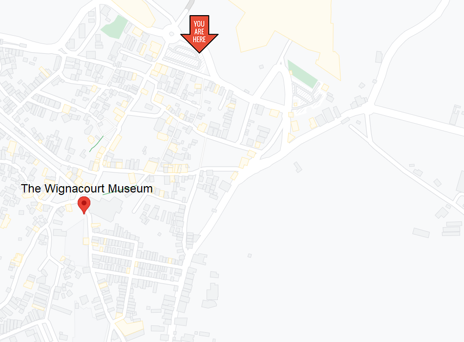
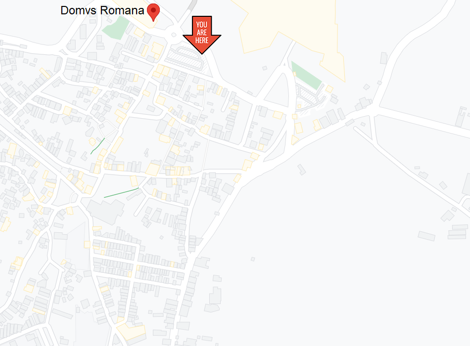
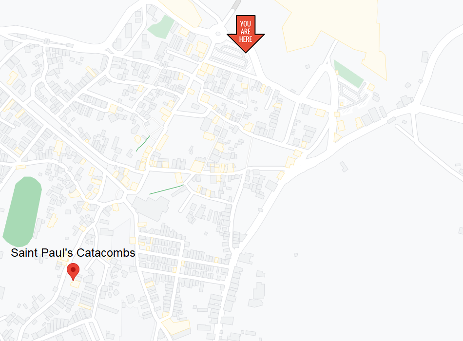
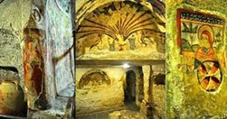

Located in the west-central region of Malta, Rabat is one of the most historically important cities that can be found in Malta.
First and foremost, Rabat is considered by many to be the birthplace of Christianity in Malta. The reason for this being that, many believe that Rabat was Saint Paul’s place of residence during his three month stay in Malta (where the specific place he stayed, is known as ‘Saint Paul’s Grotto, which is available for the general public to visit nowadays). Not to mention that Rabat contains a number of catacombs (including Saint Paul’s Catacombs and Saint Agatha’s Catacombs), which were built during Italy’s control over Malta.
Malta was also under the control of Arabs for more than 200 years (from 870 AD to 1090 AD). This was especially evident in Rabat’s case due to the fact that Rabat underwent an expansion in land, as a result of having its neighbouring city Mdina scale down its walls.
In today’s day and age, with over eleven thousand people living in Rabat, this city is more than just a historical tale, but has many things to do and explore!
Museums
Catacombs
Wignacourt Museum
The Wignacourt Museum formerly served as a dwelling for the members of the clergy belonging to the order of Saint John. The building itself was constructed in the eighteenth century, it’s architecture taking great inspiration from the baroque era.
Named after Grand Master Alof de Wignacourt (who ruled over Malta from 1601 to 1622 A.D), the museum is split into three levels.
The underground level is of great interest to many because of its historical importance throughout the ages. Firstly, this level is connected to Saint Paul’s Grotto, which is where Sain Paul himself resided during his stay in Malta (60 A.D). Secondly, the hypogea within it (which were of a Punic, Roman, and Christian nature) were used as air-raid shelters during world war 2.
The ground floor consists of some minor collections, as well as grand garden which once had the clergy members’ dining hall within it.
The first floor is the main exhibition space, where one can find a number of paintings made by European and Maltese artists (such as Mattia Preti and Antoine Favray), as well as a collection of Spanish, Italian, and Maltese Silver ranging from the seventeenth to nineteenth century.

Domus Romana
The Domus Romana (or Domvs Romana) was originally a roman-styled townhouse for a Roman nobleman. The residence itself was constructed in the first century BC, and remained in use until the second century AD (around 300 years).
However, things took a turn for the worse for the roman house. This was mainly due to the fact that during the eleventh century, a Muslim cemetery was set up in the same location where the remains of the roman abode stood.
As a result, the re-discovery of the Domus Romana in 1881 did not yield many artifacts. In fact, the main attraction from these remains was the Hellenistic-styled mosaics which were used for decoration and depicting mythological scenes. Other artifacts which were brought to light included coins, tableware, and bath accessories.
Ever since 1882, this historical site has been made available to the general public in the form of a museum. One of the reasons as to why the museum was established in the first place, was so that the mosaics could be better preserved.

Saint Pauls Catacombs
Saint Paul’s Catacombs serve as one of the most important historic sites in Malta when it comes to Christian archaeology.
From as early as the third century, these catacombs served as burial grounds for the Punic and Roman people at the time, until the eighth century.
The site’s main area consists of many tombs and interconnected passages, covering an area greater than two thousand square meters. This makes Saint Paul’s Catacombs the largest catacomb discovered in Malta so far.
Amongst the many burial types that can be found within this network, the most prevalent burial type is that of the ‘baldacchino’ tombs, which greatly influence the main corridors of this network. These such tombs had four pillars for support, forming arches on every side of the tomb.
Lastly, these catacombs are riddled with illustrations and messages written in red paint.

Saint Agatha's Catacombs
Dating back to the third century, Saint Agatha's Catacombs were used as underground cemeteries for Pagans, Jews, and Christians, each with their own designated sections.
While Saint Paul’s Catacombs claim to be the largest catacombs found in Malta, this is only true when considering the area which is accessible by the general public. In fact, Saint Agatha's Catacombs are twice as large as Saint Paul’s Catacombs, but many sections containing fresco mural paintings have been closed off to prevent damaging them.
However, certain sections containing murals which are slightly incomplete/disconnected, are still available for the general public to see.

Amongst the many types of tombs that can be encountered within Saint Agatha's Catacombs, one of the most important types is that of the "saddle-back canopied table". Such a tomb would have its upper section take the form of a saddle’s back, and would also have a canopy (a cover suspended over the tomb) which would be supported by four pillars.